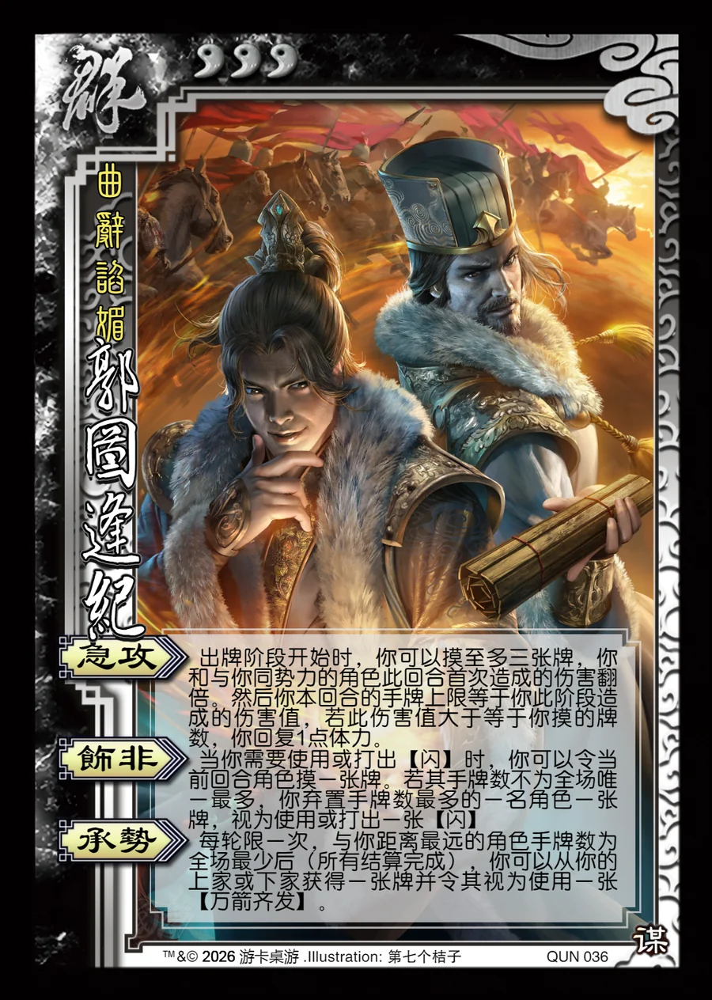

点击卡面查看大图
群
谋郭图逢纪
♥3曲辞谄媚
急攻
出牌阶段开始时，你可以摸至多三张牌，你和与你同势力的角色此回合首次造成的伤害翻倍。然后你本回合的手牌上限等于你此阶段造成的伤害值，若此伤害值大于等于你摸的牌数，你回复1点体力。
饰非
当你需要使用或打出【闪】时，你可以令当前回合角色摸一张牌。若其手牌数不为全场唯一最多，你弃置手牌数最多的一名角色一张牌，视为使用或打出一张【闪】
承势
每轮限一次，与你距离最远的角色手牌数为全场最少后（所有结算完成），你可以从你的上家或下家获得一张牌并令其视为使用一张【万箭齐发】。